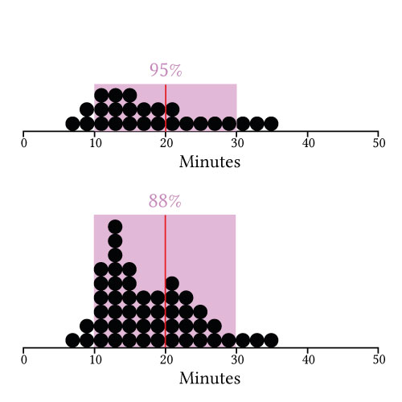

Théo
Jourdan
jourdan[dot]theo[at]protonmail[dot]comISIR lab
Sorbonne University
Paris
France
about
I'm Postdoctoral fellow funded by the Arcol project, in ACIDE team part of the ISIR (Institut des Systèmes Intelligent et de Robotique) lab at Sorbonne University in Paris and member of the HCI group of the lab. With a PhD in Computer Science about privacy and transparency in machine learning used for rehabilitation with IMU sensors, my research now focuses on the study of machine learning technology situated in human musical practices thanks to qualitative, quantitative, and practice-based methods. My research adopts a critical perspective on this technology, as a way to include socio-cultural, and inclusive dimensions of human musical expression.
+ I'm into all kinds of maps and big circles.
+ I'm into all kinds of maps and big circles.
projects

Time estimator
An online tool that displays a predictive visualization of the duration of personalizable tasks.
It was developed as a result of a study on predictive visualizations for estimates of task duration. For more details, you can read our paper and pre-registeration on OSF. You can also directly access the full results.
Morgane Koval, Yvonne Jansen. Do You See What You Mean? Using Predictive Visualizations to Reduce Optimism in Duration Estimates. CHI 2022 - Conference on Human Factors in Computing Systems, Apr 2022, New Orleans, United States. DOI 10.1145/3491102.3502010.
Honorable mention
Download BibTex citation.
Honorable mention
resume
experience
June-August 2023
Visiting Student working on animated predictive visualizations, supervised by Fanny Chevalier.
DGP, University of Toronto, ON, Canada.
DGP, University of Toronto, ON, Canada.
March-August 2020
Internship "Situated Personal Time Management", supervised by Yvonne Jansen.
ISIR, Sorbonne University, France.
ISIR, Sorbonne University, France.
education
2018-2020
MSc in Computer Science Specialty: operations research and AI (robotics & decision support).
Sorbonne University, Paris, France.
Sorbonne University, Paris, France.
2015-2018
teaching
April-June 2023
C programming project Students (3rd year) had to code an Amazon game with different strategies (head of course: David Renault).
Enseirb-Matmeca, Talence, France.
Enseirb-Matmeca, Talence, France.
2022-2023
Object-oriented programming in Java Students (4th year) had to submit a weekly report of their assigment and then their code at the end of the semester as a final project (head of course: Georges Eyrolles).
Enseirb-Matmeca, Talence, France.
Enseirb-Matmeca, Talence, France.
April 2022
Workshop for MIMM As part of the "Moi Informaticienne, Moi Mathématicienne" week (yearly event), teenage girls from middle to high school attend different workshops to familiarize themselves with mathematics and computer science in more depth -- Workshop on the War/Battle card game in Python (heads of project: Marc Zeitoun, Lisl Weynans, Chantal Menini, Jean-Jacques Ruch).
University of Bordeaux, France.
University of Bordeaux, France.
publications
Journals
2021
T.Jourdan, N.Debs, C. Frindel The Contribution of Machine Learning in the Validation of Commercial Wearable Sensors for Gait Monitoring in Patients: A Systematic Review. Sensors. DOI 10.3390/s21144808.
2021
T.Jourdan, N.Debs, C. Frindel Towards the protection of privacy in connected objects for health activity recognition (translated). Revue des Sciences et Technologies de l’Information-Série TSI: Technique et Science Informatiques. DOI 10.3166/RIA.28.1-27.
2020
T.Jourdan, A.Boutet, A.Bahi, C.Frindel Privacy-preserving IoT Framework for Activity Recognition in Personal Healthcare Monitoring. ACM Transactions on Computing for Healthcare. DOI 10.1145/3416947.
Conferences
Yvonne Jansen, Federica Bucchieri, Pierre Dragicevic, Martin Hachet, Morgane Koval, Léana Petiot, Arnaud Prouzeau, Dieter Schmalstieg, Lijie Yao, Petra Isenberg. Envisioning Situated Visualizations of Environmental Footprints in an Urban Environment. VIS4Good - Visualization for Social Good workshop held as part of IEEE VIS 2022, Oct 2022, Oklahoma City, United States. DOI 10.5281/zenodo.7053934.
[Download BibTex citation]
[Download BibTex citation]
Workshops
Morgane Koval, Yvonne Jansen. How to Visualize Food Quantities to Prevent Food Waste? Examples and Challenges. VIS 2022 - IEEE VIsualization & Visual Analytics, Oct 2022, Oklahoma City, United States. hal-03832726.
[Download BibTex citation] [Access Poster]
[Download BibTex citation] [Access Poster]
misc
If you speak French, I can guess your birthday.